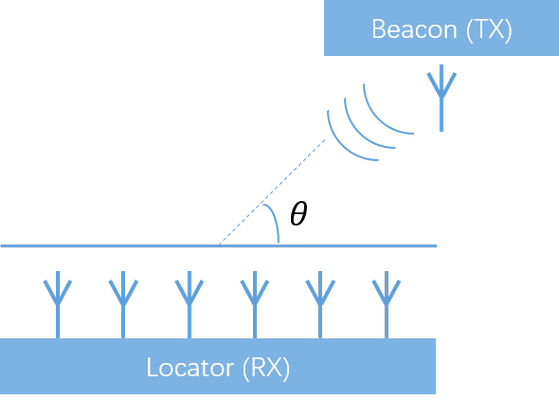

蓝牙信标“寻向功能”解决方案
概述
蓝牙信标，即蓝牙beacon，是一种基于蓝牙的消息广播，它已在很多商场有部署，实现室内定位与导航的新型应用。
蓝牙信标的工作方式很简单，Beacon向周边广播自己的ID，当用户靠近Beacon，其手机APP接收到来自Beacon的广播，APP根据广播的ID触发一些任务，如显示用户当前位置信息，或者当前商品信息。
Fig 1. 蓝牙信标应用
问题的产生：不具备方向信息，以及定位准确度不足
实现优质LBS服务的前提是需要良好的Beacon定位准确度。在蓝牙v5.1之前，Beacon的定位原理是基于蓝牙信号RSSI（接收方所收到蓝牙信号的强度）推测出目标的相对距离，此类算法无法辨别目标方向信息，另外，由于RSSI易受到外部环境干扰，稳定性不佳，所以Beacon定位准确度不高，通常定位精度在1~2米及以上。
Fig 2. 基于RSSI的BLE Beacon定位方案
Beacon寻向解决方案
蓝牙5.1新增了“寻向”功能，可以获取目标与参考点之间的角度关系，从而辨别目标方向。结合RSSI与角度信息，定位精度可达厘米级别。
Fig 3. 基于角度/方向的BLE Beacon定位方案
蓝牙信标的基础硬件组成主要包含蓝牙芯片、（多）天线、电池和外壳。
Fig 4. Beacon硬件组成
针对蓝牙信标，LinkedSEMI芯片具备以下特征：
- 支持蓝牙v5.1标准，根据信号的收、发情况，寻向算法可以分为AoA（到达角）和AoD（发出角）两种模式；
- 功耗非常低，以每1秒钟发送1次蓝牙广播为例，LE51系列的平均功耗约为10uA，可以由一颗纽扣电池续航数年之久；
Angle of Arrival (AoA / 到达角)
算法原理：
- Beacon与Locator建立蓝牙连接；
- Beacon使用单个天线发射信号；
- Locator使用天线阵列接收信号；
- 因接收信号在不同天线上到达时间不同，产生相位差，通过相位差推测Beacon方向；

Fig 5. 蓝牙5.1 AoA寻向
典型应用：
- 汽车上安装Beacon；
- 汽车钥匙作为Locator，支持2根以上的多天线设计；
- 钥匙接收到Beacon信号，分辨方位，引导车主寻车，引导方式可以在钥匙上构建能够表示方向的指示灯；
Fig 6. AoA停车场寻车
Angle of Departure (AoD / 发出角)
算法原理：
- Beacon与Mobile无需建立蓝牙连接；
- Beacon使用天线阵列发射信号；
- Mobile使用单个天线接收信号；
- Mobile获取与各个Beacon的相对角度，综合角度信息计算自己的位置；

Fig 7. 蓝牙5.1 AoD寻向
典型应用：
- 商场内部署多个Beacon，部署越多精度越高；
- 用户手机作为Mobile，运行Beacon扫描程序；
- 手机通过AoD算法求得位置，在地图上更新状态；
Fig 8. AoD商场室内导航